List Fav Animeku

One Piece
Sudah berapa banyak anime yang kamu tonton? Kalau kamu sudah menonton berbagai judul anime, kamu
pasti tahu bahwa anime punya tema yang sangat beragam, mulai dari olahraga, kriminal, hingga
petualangan. Tapi ada satu anime yang benar-benar mengambil dunia petualangan ke level yang
berbeda—yaitu One Piece. Dengan cerita yang panjang, karakter yang beragam, dan dunia yang penuh
warna, One Piece bukan hanya sekadar anime petualangan, tetapi juga tentang persahabatan,
impian, dan perjuangan yang tak ada habisnya."

One Piece bercerita tentang Monkey D. Luffy, seorang pemuda yang bercita-cita menjadi Raja Bajak
Laut dengan menemukan harta legendaris yang dikenal sebagai "One Piece." Luffy memiliki kekuatan
luar biasa berkat makan buah iblis Gomu Gomu no Mi, yang memberinya tubuh seperti karet. Dalam
perjalanannya, Luffy mengumpulkan kru yang setia, masing-masing dengan impian dan latar belakang
unik, termasuk Zoro sang ahli pedang, Nami si navigator, Usopp sang penembak jitu, dan Sanji si
koki. Bersama-sama, mereka mengarungi dunia luas yang penuh dengan pulau-pulau misterius, musuh
kuat, dan petualangan tak terduga.
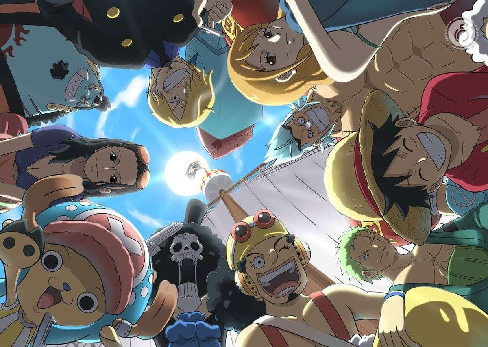
Sepanjang perjalanan, Luffy dan krunya menghadapi berbagai tantangan, seperti organisasi
pemerintah yang disebut Angkatan Laut, kelompok bajak laut lainnya, dan berbagai kekuatan
misterius seperti Buah Dewa dan Haki. Sambil mengejar impian masing-masing, mereka bertarung
untuk melawan ketidakadilan, mencari persahabatan sejati, dan membuka rahasia dunia yang penuh
dengan misteri, seperti sejarah masa lalu dan asal usul harta One Piece itu sendiri. Dalam dunia
yang dipenuhi dengan kekuatan besar dan petualangan tanpa batas, Luffy dan teman-temannya
berjuang untuk mewujudkan impian mereka meskipun menghadapi ancaman yang semakin besar.
Black Clover
Black Clover adalah anime yang wajib ditonton bagi siapa saja yang menyukai aksi seru dan dunia
fantasi yang penuh dengan sihir. Dengan ritme cerita yang cepat dan penuh energi, anime ini
menawarkan pertempuran epik yang dikemas dengan animasi dinamis dan koreografi yang memukau.
Setiap episode dipenuhi dengan kejutan, taktik cerdas, dan peningkatan kekuatan karakter yang
menjadikannya sangat menghibur. Dunia yang dibangun dalam Black Clover sangat luas dan penuh
dengan berbagai sistem sihir yang unik, menciptakan banyak peluang untuk eksplorasi dan
pertarungan yang memikat. Karakter-karakter yang penuh semangat, dengan tekad untuk mengatasi
segala rintangan, juga menambah daya tarik anime ini, membuat penonton terus ingin tahu
bagaimana mereka akan berkembang. Bagi mereka yang mencari anime dengan aksi yang konsisten,
dunia yang kaya, dan karakter-karakter yang inspiratif, Black Clover adalah pilihan yang tepat
untuk menyelami petualangan penuh sihir dan tantangan.
![]()
Black Clover mengisahkan Asta, seorang pemuda yang lahir tanpa kemampuan sihir di dunia di mana
sihir adalah hal yang sangat penting. Meskipun tidak memiliki kekuatan sihir, Asta bertekad
untuk menjadi Raja Sihir, gelar tertinggi yang hanya bisa dicapai oleh penyihir terkuat. Untuk
mewujudkan impiannya, Asta berlatih keras dan mendapat sebuah buku grimoire yang sangat langka,
yaitu Grimoire Berlima, yang memberinya kekuatan unik: pedang anti-sihir yang dapat menetralkan
sihir apapun. Bersama teman masa kecilnya, Yuno, yang sangat berbakat dalam sihir angin, Asta
berjuang untuk menjadi penyihir terkuat dan membuktikan bahwa siapa pun bisa mencapai impian
mereka, meskipun tanpa kekuatan alami.
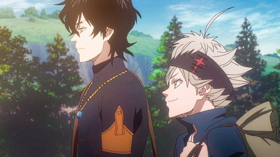
Dalam perjalanan menuju impian mereka, Asta dan Yuno bergabung dengan Pasukan Sihir, organisasi
elit yang terdiri dari penyihir-penyihir kuat dari berbagai klan. Mereka menghadapi berbagai
tantangan besar, mulai dari misi berbahaya hingga melawan ancaman gelap yang dapat menghancurkan
dunia. Sementara Yuno terus berkembang sebagai penyihir luar biasa, Asta berusaha keras untuk
mengejar ketertinggalannya dengan tekad dan semangat yang tak tergoyahkan. Seiring berjalannya
waktu, keduanya mengungkap konspirasi besar yang mengancam dunia sihir dan menemukan kekuatan
dalam persahabatan dan tekad mereka untuk meraih masa depan yang lebih baik.
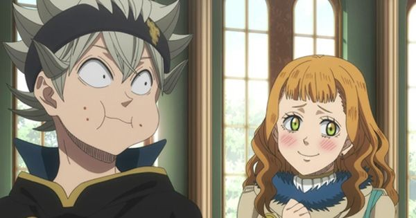
Walaupun Asta tidak memiliki energi sihir namun ternyata banyak gadis cantik yang menyukainya
seperti Mimosa, Noelle, Rebecca, Kahono, dan Secre.
Namun Asta hanya mencintai 1 orang yaitu suster Lily 🤣.

Tokyo Ghoul
Tokyo Ghoul adalah anime yang wajib ditonton bagi mereka yang menyukai cerita gelap dan
emosional dengan nuansa horor yang intens. Dengan atmosfer yang tegang dan penuh dengan misteri,
anime ini membawa penonton ke dalam dunia yang penuh dengan ketakutan dan pertarungan antara
manusia dan ghoul yang mencekam. Visual yang menakjubkan, terutama dalam menggambarkan
pertempuran dan perubahan karakter, membuat setiap adegan terasa kuat dan mengesankan. Ditambah
dengan soundtrack yang luar biasa, Tokyo Ghoul berhasil menciptakan pengalaman menonton yang
mendalam dan penuh dengan ketegangan. Bagi mereka yang mencari anime dengan tema yang lebih
gelap, penuh konflik batin dan pertarungan emosional yang kuat, Tokyo Ghoul adalah pilihan
sempurna untuk menikmati kisah yang tak hanya seru, tapi juga menggugah perasaan.

Tokyo Ghoul mengikuti kisah Ken Kaneki, seorang mahasiswa yang nyaris tewas dalam serangan oleh
ghoul, makhluk pemakan manusia yang tersembunyi di balik wajah manusia biasa. Setelah kecelakaan
itu, Kaneki selamat, namun tubuhnya sebagian besar digantikan oleh organ ghoul, membuatnya
menjadi setengah ghoul. Kini terjebak antara dunia manusia dan ghoul, Kaneki harus berjuang
untuk bertahan hidup, memahami identitas barunya, dan menghadapi konflik internal dan eksternal
yang datang dengan kemampuannya yang semakin kuat. Sementara itu, ia terjerat dalam pertempuran
antara kelompok ghoul yang saling berseteru dan pasukan pemburu ghoul yang berusaha membasmi
mereka.
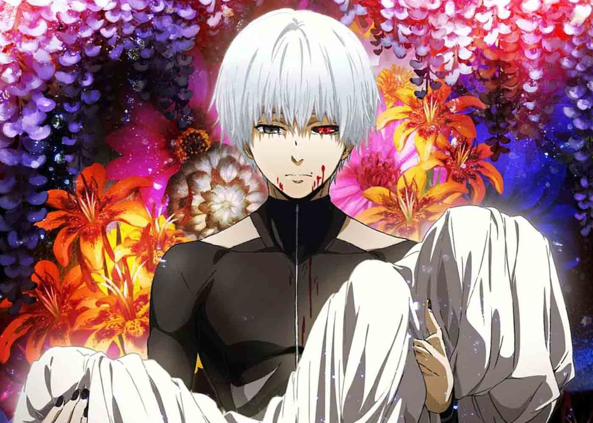
Di tengah hidupnya yang berubah drastis, Kaneki bertemu dengan berbagai ghoul yang memiliki
beragam latar belakang, baik yang berusaha hidup damai maupun yang brutal dalam mengejar
kekuasaan. Ia juga bergabung dengan Anteiku, sebuah kafe yang dijalankan oleh ghoul, yang
memberinya tempat untuk mencari pemahaman tentang dirinya. Konflik batin Kaneki semakin memburuk
saat ia terjebak dalam perang antara ghoul yang ingin mempertahankan eksistensi mereka dan
manusia yang takut akan keberadaan mereka. Ketika kegelapan dan kekuatan dalam dirinya semakin
besar, Kaneki harus memilih jalan hidupnya—antara menjaga kemanusiaannya atau menerima kenyataan
sebagai ghoul yang penuh dengan kekerasan dan pertempuran.
overlord
Overlord adalah anime yang wajib ditonton bagi siapa saja yang menginginkan pengalaman menonton
dengan dunia fantasi yang gelap dan penuh strategi. Anime ini menyuguhkan dunia yang luas dan
kaya, dengan atmosfer yang mencekam dan visual yang memukau, menciptakan sensasi petualangan
yang tak terlupakan. Dengan kombinasi antara elemen aksi, intrik politik, dan karakter-karakter
yang kompleks, Overlord menawarkan lebih dari sekadar pertempuran epik—ia menyelami kedalaman
moralitas, kekuasaan, dan dinamika dunia yang penuh tantangan. Setiap episode penuh dengan
ketegangan, kejutan, dan taktik cerdas yang akan membuat penonton terus terjaga. Bagi mereka
yang mencari anime dengan dunia yang sangat terperinci, penuh aksi cerdas, dan tema-tema yang
mendalam, Overlord adalah pilihan yang sempurna untuk menikmati sebuah petualangan yang tak
hanya menarik, tetapi juga penuh dengan pertanyaan dan pemikiran.
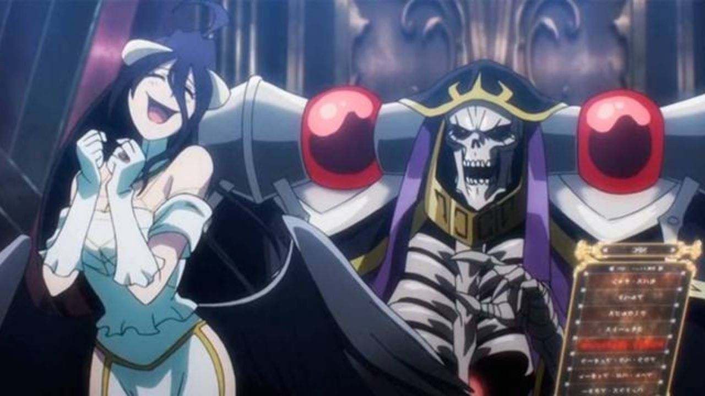
Overlord mengikuti kisah Suzuki Satoru, seorang pemain yang terperangkap dalam dunia game VR
yang dikenal sebagai Yggdrasil setelah server game tersebut ditutup. Sebelum game dimatikan,
Satoru—yang dikenal dengan karakter Ainz Ooal Gown, pemimpin dari guild bajak laut yang
kuat—memutuskan untuk tetap berada di dalam dunia game sampai akhir. Namun, setelah game
berakhir, Satoru mendapati dirinya tidak hanya terjebak dalam dunia tersebut, tetapi juga bahwa
ia dan para NPC (karakter non-playable) yang ada di guildnya kini memiliki kesadaran dan
kehidupan nyata. Dengan status sebagai makhluk undead yang sangat kuat, Ainz bertekad untuk
menemukan cara untuk keluar dari dunia tersebut, sembari memimpin para pengikutnya untuk
menguasai dunia baru yang penuh dengan berbagai ras dan kerajaan.
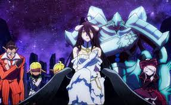
Seiring berjalannya waktu, Ainz mulai membangun kekuatan yang lebih besar, menjelajahi dunia
yang baru ini, dan menciptakan kerajaan yang tak tertandingi. Salah satu aspek penting dalam
cerita adalah hubungan Ainz dengan "anak buahnya," terutama dengan para anggota Momon, karakter
yang merupakan bagian dari kastilnya. Beberapa dari mereka, seperti Albedo—seorang pengawal yang
sangat setia—dengan penuh dedikasi melayani Ainz dan memiliki perasaan khusus padanya. Selain
itu, Ainz memiliki seorang "anak," yaitu Solution Epsilon, yang merupakan salah satu dari
pengikut setianya, dan dia sangat bergantung pada loyalitas anak buah ini untuk merencanakan dan
mengimplementasikan taktik serta strategi yang cermat. Ketegangan dan dinamika antara Ainz dan
para anak buahnya, yang merasa segan dan terkadang berperasaan lebih terhadapnya, menjadi salah
satu elemen yang menarik dalam alur cerita, menjelajahi tema kekuasaan, loyalitas, dan hubungan
antar karakter.

shadow garden
The Eminence in Shadow (Shadow Garden) adalah anime yang wajib ditonton bagi siapa saja yang
menyukai cerita dengan nuansa misteri dan aksi yang memikat. Anime ini menawarkan pengalaman
yang berbeda dengan paduan antara intrik politik, strategi cerdas, dan adegan laga yang
mengesankan, memberikan tontonan yang penuh ketegangan dan kejutan. Dengan desain dunia yang
kaya dan visual yang memukau, anime ini berhasil menciptakan atmosfer yang gelap namun menarik,
membangun rasa penasaran di setiap episodenya. Selain itu, karakter-karakter dalam anime ini
memiliki daya tarik tersendiri, dengan kemampuan dan taktik yang menarik, menjadikan cerita
semakin dinamis. Bagi penggemar anime yang mencari sesuatu yang penuh tantangan dan penuh aksi,
The Eminence in Shadow adalah pilihan yang tepat untuk menikmati sebuah pengalaman menonton yang
penuh misteri, strategi, dan ketegangan.
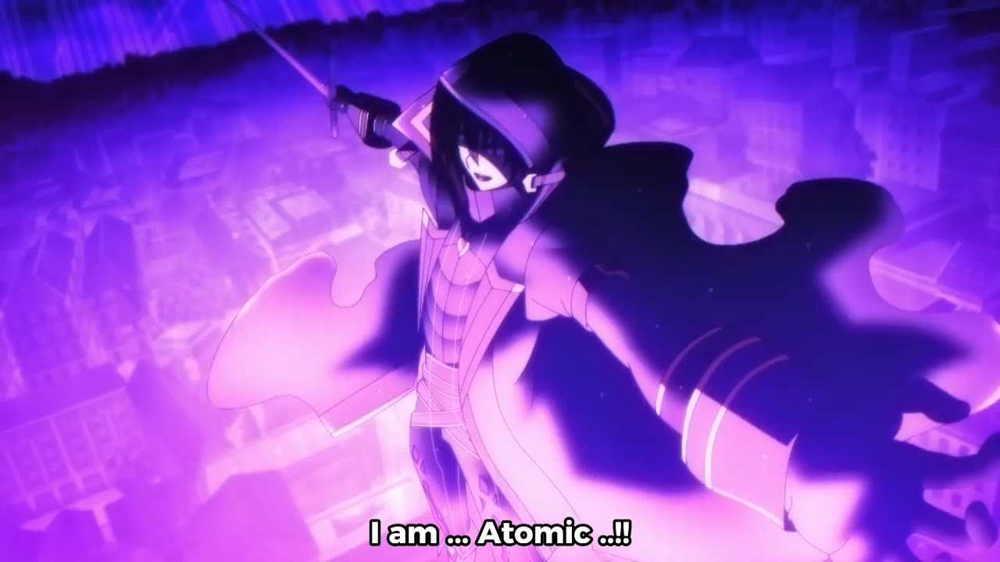
The Eminence in Shadow (Kage no Jitsuryokusha ni Naritakute!) mengisahkan tentang Cid Kagenou,
seorang remaja yang sangat mengagumi konsep menjadi sosok bayangan (shadow) yang kuat dan
misterius, jauh dari perhatian orang lain. Dalam kehidupannya yang sebelumnya biasa-biasa saja,
Cid sangat tertarik pada dunia kekuatan tersembunyi dan organisasi rahasia. Namun, dalam suatu
kecelakaan, dia terbunuh dan bereinkarnasi ke dunia lain yang penuh dengan sihir dan kekuatan.
Dalam dunia baru ini, Cid memutuskan untuk menyembunyikan kekuatannya dan bertindak sebagai
"bayangan" yang memanipulasi peristiwa besar dari balik layar. Dia membentuk sebuah organisasi
rahasia bernama Shadow Garden, yang konon bertujuan untuk memerangi kelompok jahat yang
mengancam dunia.

Namun, dalam perjalanan cerita, Cid justru terkejut ketika menemukan bahwa musuh yang dia anggap
rekaan—seperti kelompok Diabolos—ternyata benar-benar ada dan berbahaya. Meskipun semuanya
tampak seperti permainan dan khayalan bagi Cid, Shadow Garden mulai mendapatkan pengaruh besar
dan mengungkap konspirasi dunia yang lebih dalam. Para anggota Shadow Garden, yang awalnya
hanyalah bagian dari fantasi Cid, mulai melihatnya sebagai pemimpin yang kuat dan bijaksana.
Cid, yang tak pernah berniat untuk menjadi pahlawan atau pemimpin, kini terjebak dalam permainan
besar yang tak pernah ia duga, meskipun ia tetap memandang semuanya dengan sikap acuh tak acuh,
menikmati peranannya sebagai "bayangan" yang mengendalikan segalanya dari belakang.
kumo desu ga, na nika?
Kumo desu ga, na nika? adalah anime yang patut ditonton bagi siapa saja yang mencari pengalaman
isekai yang unik dan penuh kejutan. Dengan alur cerita yang cepat dan penuh dengan humor absurd,
anime ini menghadirkan dunia fantasi yang kaya akan petualangan dan berbagai makhluk aneh yang
tidak terduga. Keunikan Kumo desu ga, na nika? terletak pada cara anime ini menggabungkan aksi,
komedi, dan elemen strategi yang tak terduga, membuatnya menyegarkan di tengah banyaknya anime
isekai lainnya. Visualnya yang penuh warna dan desain karakter yang menarik membuat setiap momen
dalam anime ini terasa hidup, sementara dinamika cerita yang penuh liku akan terus membuat
penonton penasaran. Bagi yang mencari anime dengan cerita yang tidak konvensional dan menghibur,
Kumo desu ga, na nika? adalah pilihan yang tepat untuk menambah koleksi tontonan seru dan
mengasyikkan.

Kumo Desu ga, Nani ka? (atau So I'm a Spider, So What?) mengisahkan tentang seorang siswa SMA
yang tiba-tiba bereinkarnasi ke dalam dunia fantasi setelah kecelakaan besar yang menimpa kelas
mereka. Namun, alih-alih bereinkarnasi sebagai manusia atau pahlawan seperti yang diharapkan,
dia justru terlahir kembali sebagai seekor laba-laba biasa di sebuah dungeon yang penuh dengan
monster berbahaya. Dengan kecerdasan dan insting bertahan hidup yang kuat, dia berjuang keras
untuk bertahan hidup di dunia yang penuh dengan tantangan dan bahaya, sementara berusaha untuk
mencari tahu bagaimana cara keluar dari kondisi mengerikan ini.
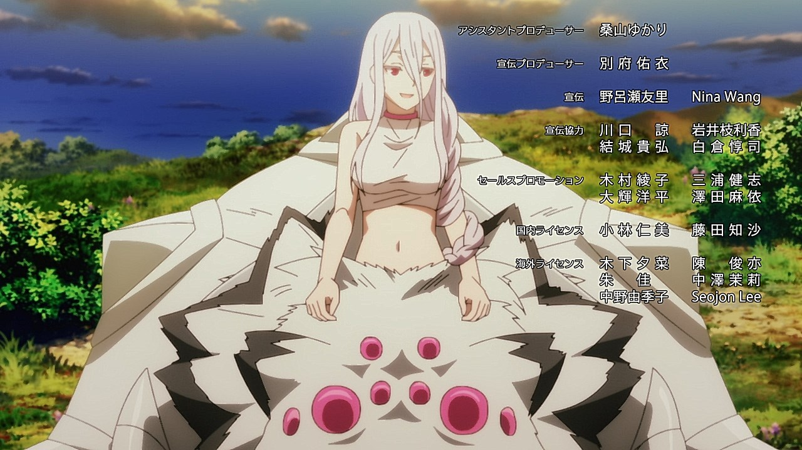
Dalam perjalanannya, sang protagonis laba-laba ini belajar mengembangkan kekuatan dan kemampuan
baru melalui perjuangan dan pertarungan melawan monster-monster yang lebih kuat. Cerita juga
menunjukkan sisi kehidupan teman-teman kelasnya yang bereinkarnasi ke dalam tubuh pahlawan atau
bangsawan, masing-masing dengan takdir dan petualangan mereka sendiri. Namun, meskipun berada di
dunia yang sama, protagonis laba-laba harus menghadapi perjuangan yang jauh lebih sulit dan
berbahaya, dan melalui berbagai peristiwa, dia mulai menyadari bahwa nasibnya di dunia ini
mungkin jauh lebih besar dari yang dia bayangkan. Dengan kecerdasan dan keberanian, dia terus
melangkah maju, berusaha mengatasi tantangan demi tantangan, hingga akhirnya menemukan jati
dirinya di dunia yang penuh misteri ini.
a silent voice
Koe no Katachi adalah anime yang wajib ditonton bagi siapa saja yang mencari film dengan cerita
mendalam dan emosional. Dengan visual yang memukau dan atmosfer yang penuh perasaan, anime ini
berhasil menyampaikan pesan tentang pengampunan, penebusan, dan pentingnya hubungan antar
manusia dengan cara yang sangat menyentuh. Koe no Katachi menawarkan pengalaman menonton yang
tidak hanya menghibur, tetapi juga menggugah pemikiran, membuat penonton merenungkan arti
persahabatan, kesalahan, dan memaafkan diri sendiri. Dengan pendekatan yang sensitif terhadap
isu-isu sosial seperti bullying dan disabilitas, anime ini memberikan wawasan yang bernilai dan
meninggalkan kesan yang mendalam bagi siapa saja yang menontonnya.

A Silent Voice (Koe no Katachi) bercerita tentang Shoya Ishida, seorang remaja yang dahulu
pernah melakukan perundungan terhadap seorang gadis tuli bernama Shoko Nishimiya saat mereka
masih di sekolah dasar. Karena perilakunya yang kasar, Shoya menjadi sasaran bully dari
teman-temannya, sementara Shoko yang sudah menderita akibat ketidakmampuannya untuk mendengar
semakin terisolasi. Setelah peristiwa itu, Shoya hidup dengan rasa bersalah dan penyesalan yang
mendalam, dan dia memutuskan untuk mencari cara untuk menebus kesalahannya, terutama dengan
menemui Shoko yang kini bersekolah di tempat yang berbeda.
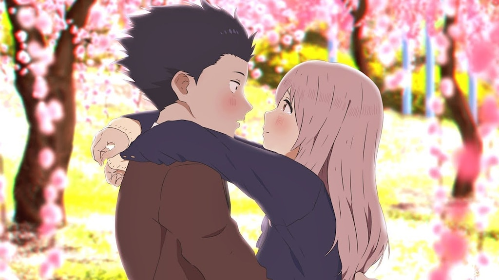
Shoya berusaha mendekati Shoko dan meminta maaf atas perundungannya, tetapi awalnya Shoko tidak
bisa sepenuhnya memaafkannya karena luka emosional yang dalam. Kejadian-kejadian masa lalu,
termasuk tindakan perundungan dan perasaan terasingkan yang dialami oleh Shoko, menjadi halangan
besar bagi mereka untuk bisa saling memahami dan menerima. Namun, seiring berjalannya waktu,
Shoya berusaha menunjukkan perubahan dan penyesalan yang tulus, sementara Shoko pun perlahan
mulai membuka diri. Pada akhirnya, meskipun mereka melalui banyak tantangan emosional, hubungan
mereka mulai membaik, dan mereka berhasil menemukan pengertian satu sama lain. Di akhir cerita,
meski tidak sempurna, keduanya mulai berdamai dengan masa lalu mereka dan saling mendukung untuk
melanjutkan kehidupan dengan lebih positif, simbol dari penyembuhan dan pemulihan hubungan yang
rusak.
konoSuba
KonoSuba adalah anime yang wajib ditonton bagi siapa saja yang ingin menikmati dunia isekai
dengan pendekatan yang menyegarkan dan penuh humor. Alih-alih mengikuti pola isekai yang serius
atau penuh ambisi heroik, KonoSuba menawarkan komedi yang cerdas melalui karakter-karakter yang
tak terduga dan situasi yang serba konyol. Dengan animasi ekspresif dan dialog yang memikat,
KonoSuba berhasil menciptakan atmosfer yang ringan namun tetap menarik, membuat penontonnya
tertawa di setiap episodenya. Di balik humornya yang menghibur, anime ini juga menyentuh
tema-tema persahabatan, kerja sama, dan kesabaran dalam menghadapi kesulitan dengan cara yang
tidak biasa. Jika Anda mencari anime isekai yang berbeda dan ingin menikmati petualangan yang
lebih santai namun tetap mengesankan, KonoSuba adalah pilihan yang tepat untuk memberikan
pengalaman menonton yang segar dan menghibur.

Konosuba: God's Blessing on This Wonderful World! (Kono Subarashii Sekai ni Shukufuku wo!)
bercerita tentang Kazuma Satou, seorang pemuda biasa yang meninggal dalam kecelakaan bodoh saat
mencoba menyelamatkan seorang gadis. Setelah kematiannya, Kazuma diberi kesempatan untuk
bereinkarnasi ke dunia fantasi sebagai pahlawan. Di sana, dia bertemu dengan seorang dewi
bernama Aqua yang menawarkan bantuan untuk memilih kemampuan khusus. Namun, Kazuma yang
frustrasi dengan dunia yang penuh dengan kesulitan dan tantangan, malah memilih Aqua untuk ikut
bersamanya, meskipun ia mengetahui bahwa dewi tersebut tidak memiliki banyak kemampuan praktis.
Keduanya pun memulai petualangan mereka, dengan Kazuma berusaha mencari cara untuk bertahan
hidup di dunia baru ini, meskipun mereka dikelilingi oleh berbagai masalah konyol.
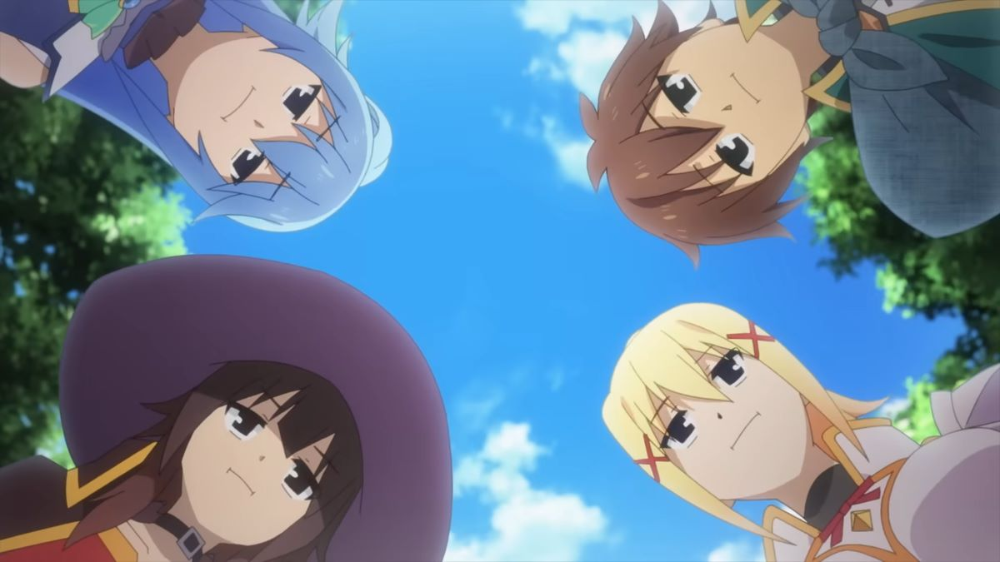
Di dunia baru, Kazuma bertemu dengan sekutu-sekutu yang jauh dari ideal, seperti Megumin,
seorang penyihir dengan obsesinya pada Explosion Magic yang hanya bisa digunakan sekali sehari,
dan Darkness, seorang ksatria dengan kekuatan besar namun memiliki kelemahan berupa
kecenderungan untuk mencari situasi berbahaya. Bersama-sama, mereka menghadapi berbagai
petualangan lucu dan penuh kegagalan. Meskipun sering terjebak dalam situasi buruk dan penuh
kekonyolan, mereka belajar untuk saling mendukung. Cerita ini lebih banyak berfokus pada humor,
parodi dari genre isekai, dan dinamika karakter yang sangat tidak biasa, di mana meskipun mereka
tidak pernah benar-benar mencapai tujuan heroik yang besar, persahabatan mereka menjadi inti
dari perjalanan yang penuh tawa ini.
bleach
Bleach adalah anime yang wajib ditonton bagi siapa saja yang menyukai aksi seru dan dunia
supranatural yang penuh intrik. Salah satu alasan utama menonton Bleach adalah skala dunia yang
dibangunnya: penuh dengan dimensi menarik seperti Soul Society dan Hueco Mundo, yang
masing-masing memiliki aturan dan karakteristik unik. Anime ini juga menyuguhkan visual
pertempuran yang epik, dikombinasikan dengan teknik dan kekuatan khas yang dimiliki para
karakter, menciptakan pengalaman menonton yang memukau. Selain itu, Bleach berhasil menghadirkan
elemen drama, persahabatan, dan ketegangan yang membuat penontonnya tidak hanya terpikat dengan
aksi, tetapi juga peduli pada setiap karakternya. Dengan soundtrack yang kuat dan karakter
desain yang ikonis, Bleach tidak hanya memuaskan sebagai tontonan, tetapi juga menawarkan dunia
fantasi yang kaya dan kompleks, menjadikannya salah satu seri anime yang tak terlupakan dan
layak direkomendasikan untuk siapa saja yang mencari pengalaman anime yang lengkap.

Bleach mengisahkan tentang Ichigo Kurosaki, seorang remaja yang memiliki kemampuan untuk melihat
roh. Suatu hari, ia bertemu dengan Rukia Kuchiki, seorang Shinigami (Dewa Maut) yang bertugas
melindungi dunia manusia dari roh jahat yang dikenal sebagai Hollow. Ketika Rukia terluka dalam
pertempuran melawan Hollow, Ichigo secara tidak sengaja menerima sebagian besar kekuatan
Shinigami miliknya, dan kini ia harus menggantikan tugas Rukia untuk melindungi dunia manusia
dari ancaman roh-roh jahat. Seiring berjalannya waktu, Ichigo bertemu dengan berbagai karakter
kuat, seperti teman-temannya yang juga memiliki kekuatan luar biasa, dan harus terlibat dalam
pertarungan epik melawan musuh-musuh yang semakin kuat.
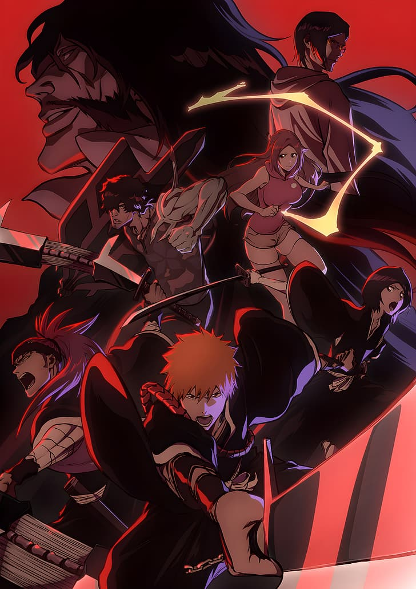
Dalam anime terbaru, Bleach: Thousand-Year Blood War, cerita berlanjut dengan konflik yang jauh
lebih besar. Setelah arc sebelumnya, Ichigo dan teman-temannya kembali menghadapi ancaman yang
lebih mengerikan—para Quincy, kelompok manusia dengan kemampuan khusus yang ingin menghancurkan
Soul Society, dunia tempat tinggal para Shinigami. Terungkap bahwa musuh utama, Yhwach, adalah
pemimpin dari Quincy yang sangat kuat dan memiliki kekuatan untuk mengendalikan masa depan.
Konflik ini membawa pertarungan yang lebih sengit, dengan banyak karakter yang sebelumnya
menjadi sekadar figuran kini mendapatkan perkembangan cerita lebih dalam. Dengan animasi yang
ditingkatkan dan pertempuran yang semakin epik, Thousand-Year Blood War memperkenalkan level
ancaman yang lebih besar, memperlihatkan transformasi dan pertumbuhan Ichigo serta
teman-temannya, sekaligus mengungkap rahasia-rahasia besar yang mengubah jalannya sejarah Soul
Society.

kimetsu no yaiba
Kamu pencinta budaya jepang? ini anime sangat rekomendasi buat kamu yang suka dengan budaya
jepang, tapi ternyata anime ini bergenre horror dan action karna di sepanjang alur anime ini
akan terjadi gelud gelud ya gelud terus, hahah jika kamu suka dengan aksi bela diri dengan
pedang katana ini anime sangat cocok buat kamu. yasudah ini adalah anime nya yaitu kimetsu no
yaiba
:strip_icc():format(webp)/kly-media-production/medias/3278875/original/079595800_1603728453-Anime-Demon-Slayer-Kimetsu-no-Yaiba.jpg)
Kimetsu no Yaiba (Demon Slayer) mengisahkan Tanjiro Kamado, seorang anak muda yang tinggal di
pegunungan bersama keluarganya. Suatu hari, ketika Tanjiro pulang ke rumah, ia mendapati
keluarganya dibantai oleh iblis (demon), sementara adiknya, Nezuko, selamat meskipun telah
berubah menjadi iblis. Bertekad untuk menyelamatkan Nezuko dan membalas kematian keluarganya,
Tanjiro bergabung dengan Demon Slayer Corps, sebuah organisasi yang berjuang untuk membasmi
iblis dan melindungi umat manusia. Dalam perjalanan, Tanjiro bertemu dengan berbagai teman dan
musuh yang kuat, serta berlatih keras untuk menguasai teknik-teknik pedang yang dapat melawan
iblis.
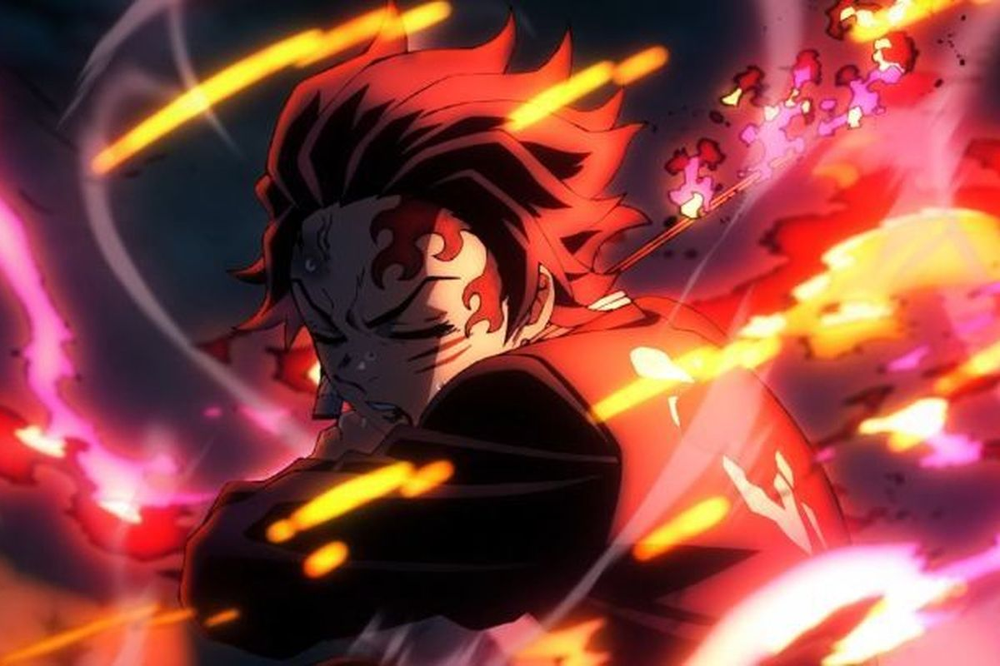
Arc terbaru yang diadaptasi dalam anime adalah Swordsmith Village Arc, yang melanjutkan
perjalanan Tanjiro setelah pertempurannya di Entertainment District Arc. Setelah pertarungan
sengit melawan Upper Rank demons, Tanjiro dan teman-temannya, termasuk Zenitsu dan Inosuke,
menuju Desa Pembuat Pedang untuk memperbaiki pedang Tanjiro yang rusak. Namun, mereka segera
terjebak dalam pertempuran melawan dua iblis Upper Rank yang sangat kuat. Di sini, Tanjiro
bertemu dengan para Hashira, pahlawan utama di Demon Slayer Corps, yang memiliki kekuatan luar
biasa, dan ia harus mengatasi ujian besar untuk meningkatkan kekuatannya. Swordsmith Village Arc
tidak hanya memperkenalkan karakter baru dan ancaman yang lebih besar, tetapi juga menampilkan
pertarungan yang lebih intens dengan animasi yang spektakuler, serta pengembangan cerita yang
lebih mendalam mengenai latar belakang para Hashira dan teknik pertarungan yang lebih canggih.
Tensei Shitara Slime Datta Ken
Bosen ga sih anime genre isekai kalo mati pasti reikarnasi jadi manusia😒, Nah disini aku punya
rekomendasi anime isekai yang seru dan yang pasti dia itu reinkarnasi jadi slime 🤣kan kocak
ya!. Namun di dunia disana dia tidak bisa bersantai karena banyak masalah yang terjadi di sana,
oleh karna itu ini anime sangat cocok buat kamu yang suka genre isekai

Tensei Shitara Slime Datta Ken (That Time I Got Reincarnated as a Slime) mengisahkan Satoru
Mikami, seorang pria berusia 37 tahun yang meninggal dalam kecelakaan dan bereinkarnasi ke dunia
fantasi sebagai seekor slime. Di dunia baru ini, Satoru, yang kini menyebut dirinya Rimuru
Tempest, memanfaatkan kekuatan luar biasa yang dimilikinya sebagai slime untuk berteman dengan
berbagai ras, seperti monster dan manusia, dan membangun kerajaan baru yang damai, di mana semua
ras bisa hidup berdampingan. Rimuru menggunakan kekuatannya yang unik untuk menyerap kemampuan
makhluk lain dan terus berkembang menjadi semakin kuat, sambil mengeksplorasi dunia dan
memperjuangkan keadilan serta kedamaian.
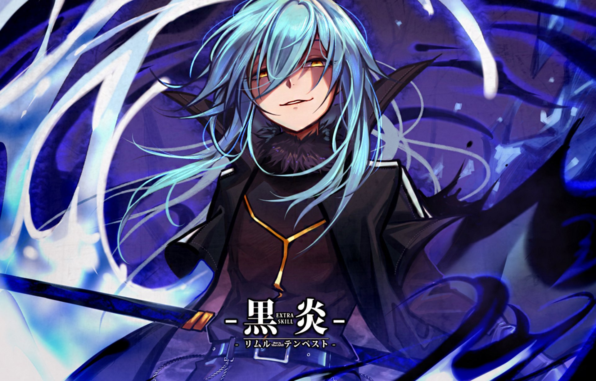
Namun, pada Tempest Arc, dunia Rimuru berubah drastis ketika pasukannya diserang oleh negara
manusia yang dipimpin oleh individu jahat. Ketika teman-temannya yang ia sayangi, seperti
orang-orang yang ada di bawah perlindungannya, dibunuh secara brutal dalam serangan tersebut,
Rimuru mengalami amukan emosional yang mengerikan. Dalam keadaan marah dan diliputi oleh rasa
kehilangan yang mendalam, Rimuru membangkitkan kekuatan terbesarnya dan, dengan menggunakan
"Predator" dan kekuatan lainnya, ia memusnahkan pasukan musuh dan mengubah dirinya menjadi Raja
Iblis, mengukuhkan dirinya sebagai salah satu makhluk terkuat di dunia. Transformasinya ini
tidak hanya membawa Rimuru ke tingkat kekuatan yang lebih tinggi, tetapi juga mengubah arah
hidupnya—dari sekadar pemimpin kerajaan menjadi entitas yang lebih berkuasa dengan tekad untuk
melindungi teman-temannya dan membalas dendam atas perbuatan jahat yang telah menghancurkan
kedamaian yang ia bangun.
shokugeki no souma
Apa kamu suka makan? atau kamu punya hobi memasak? Siapa si yang tidak suka makan!! Nah anime
ini pasti akan membuatmu tergiur
dan ingin membuat suatu makanan yang akan kamu nikmati. Karena di anime ini kamu akan melihat
bagaimana prosesdari sebuah bahan - bahan menjadi sebuah makanan atau masakan yang sangat nikmat
dan terlihat indah di mata, Anime apa itu? ya itu adalah shokugeki
no souma
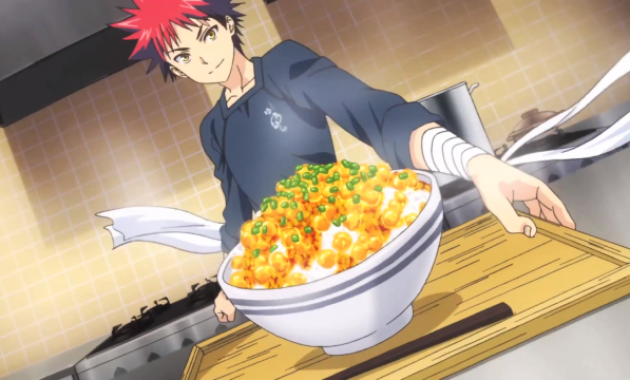
Shokugeki no Soma (Food Wars!) mengisahkan Soma Yukihira, seorang remaja yang bercita-cita
menjadi koki terbaik dan mengalahkan ayahnya, Joichiro, yang merupakan koki hebat di restoran
keluarga mereka. Setelah ayahnya menutup restoran dan pergi ke luar negeri, Soma memutuskan
untuk mendaftar di Totsuki Culinary Academy, sebuah sekolah memasak elit yang terkenal dengan
persaingan ketat dan ujian yang sangat sulit. Di sekolah tersebut, Soma bertemu dengan berbagai
siswa berbakat yang memiliki kemampuan memasak luar biasa, dan dengan semangat serta
kreativitasnya yang tinggi, ia terus bertarung dalam berbagai kompetisi kuliner untuk
membuktikan dirinya sebagai yang terbaik.
Pada musim ketiga, Shokugeki no Soma: The Third Plate, cerita memasuki arc yang penuh dengan
pertempuran kuliner yang semakin intens. Salah satu momen puncaknya adalah "Shokugeki" atau
perang masak yang terjadi selama Totsuki's Elite Ten Shokugeki. Soma dan teman-temannya harus
berhadapan dengan anggota Elite Ten, kelompok siswa terbaik di akademi, dalam kompetisi masak
yang sangat menegangkan. Di sini, Soma menghadapi tantangan terbesar dalam hidupnya: bertarung
melawan rival-rival kuat dalam pertandingan memasak yang menentukan masa depan mereka di sekolah
tersebut. Persaingan yang sangat sengit dan penuh strategi kuliner ini membawa Soma ke dalam
berbagai duel memasak, di mana setiap pertandingan memiliki tingkat kesulitan yang luar biasa,
dan menguji sejauh mana kemampuan kreatifitas serta keberanian Soma dalam memasak.
Keberhasilannya dalam mengatasi tantangan ini semakin mengukuhkan posisinya di antara yang
terbaik di Totsuki.

dr stone
Sudah berapa banyak anime yang kamu tonton? Kalau kamu sudah menonton berbagai judul anime, kamu
pasti tahu bahwa anime punya tema yang sangat beraneka ragam. Mulai dari olahraga, kriminal,
fantasi, horror, dan berbagai tema lain semua ada animenya. Tapi tahukah kamu kalau ada juga
anime yang bertema sains? Salah satu anime terbaik yang bertema sains tidak lain yaitu “Dr.
Stone”.

Dr. Stone mengisahkan tentang Senku Ishigami, seorang jenius muda yang terkejut saat seluruh
umat manusia di dunia ini tiba-tiba berubah menjadi batu akibat fenomena misterius yang dikenal
sebagai Petrification. Setelah beribu tahun terjebak dalam kondisi tersebut, Senku terbangun dan
memulai misinya untuk membangun kembali peradaban manusia menggunakan ilmu pengetahuan. Bersama
sahabatnya Taiju Oki dan Yuzuriha Ogawa, Senku berusaha untuk menghidupkan kembali manusia satu
per satu, sambil memanfaatkan ilmu pengetahuan untuk mengatasi tantangan-tantangan besar dan
membangun kembali teknologi yang hilang. Dengan tekad kuat untuk memajukan dunia melalui sains,
Senku berusaha menciptakan dunia yang lebih baik dan lebih maju daripada sebelumnya.
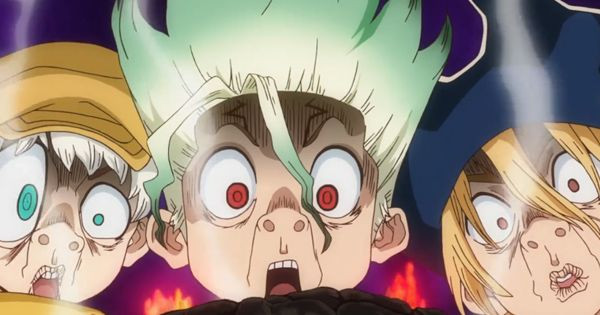
Pada Season 2 dan Season 3, Senku dan kelompoknya menghadapi tantangan besar di pulau baru yang
dipenuhi oleh kelompok musuh yang dipimpin oleh Tsukasa Shishigami, seorang mantan siswa yang
memiliki pandangan berbeda tentang cara mengatur dunia pasca-petrifikasi. Tsukasa ingin
menciptakan dunia baru tanpa teknologi modern, berfokus pada kekuatan fisik dan seleksi alam,
yang bertentangan dengan prinsip Senku untuk membangun peradaban dengan ilmu pengetahuan.
Konflik antara kelompok Senku yang berbasis pada teknologi dan kelompok Tsukasa yang
menginginkan dunia yang lebih alami semakin memanas. Puncaknya terjadi di pulau yang kaya akan
sumber daya penting, di mana Senku harus melawan Tsukasa dan kelompoknya dalam perang besar yang
menguji batas kemampuan ilmiah dan moralitas masing-masing pihak. Senku, dengan kecerdasannya
yang luar biasa, memanfaatkan strategi berbasis sains untuk melawan musuh-musuhnya, berusaha
tidak hanya untuk menang, tetapi juga untuk membuktikan bahwa sains adalah jalan menuju masa
depan yang lebih baik.